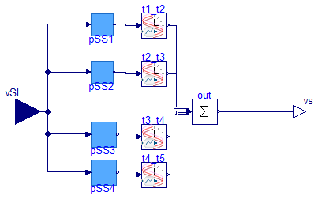
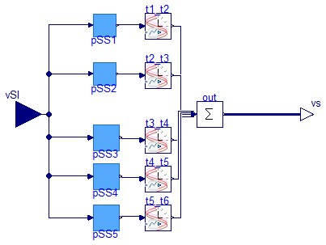

PSS Model with 4 or 5 different stages that have different parameters triggered at different times
Specialized custom PSS models.
The PSS components in this package are composed internally by four or five different PSS models (PSSTypeII) internally.
The output of each of them is enabled or disabled through a Example2.CustomComponents.TimedInputInjectionOnOff component such that only the output of one of them is injected.
This allows to "emulate" the change of parameters of a conventional PSS that would be represented by a single "structure", i.e., the block diagram of PSSTypeII, for a user-specified time-period.
Extends from Modelica.Icons.Package (Icon for standard packages).
| Name | Description |
|---|---|
| PSS Model with 4 different stages that have different parameters triggered at different times | |
| PSS Model with 5 different stages that have different parameters triggered at different times | |
| Package to test the PSS components |
 Example2.CustomComponents.PSSChangeParam.PSS4Stages
Example2.CustomComponents.PSSChangeParam.PSS4Stages
PSS Model with 4 different stages that have different parameters triggered at different times

Specialized custom PSS model with Four Stages
This PSS is comprised of four different PSS models (PSSTypeII) internally.
The output of each of them is enabled or disabled through a Example2.CustomComponents.TimedInputInjectionOnOff component such that only the output of one of them is injected.
This allows to "emulate" the change of parameters of a conventional PSS that would be represented by a single "structure", i.e., the block diagram of PSSTypeII, for a user-specified time-period.
| Type | Name | Default | Description |
|---|---|---|---|
| PSS 1 Output Timing | |||
| Real | t1 | 0 | Start time of the injection |
| PSS 2 Output Timing | |||
| Real | t2 | 30 | Start time of the injection |
| PSS 3 Output Timing | |||
| Real | t3 | 60 | Start time of the injection |
| PSS 4 Output Timing | |||
| Real | t4 | 90 | Stop time of the injection |
| Real | t5 | Modelica.Constants.inf | Stop time of the injection |
| PSS Parameters | |||
| PSS 1 | |||
| PerUnit | pss1_vsmax | 0.2 | Max stabilizer output signal [1] |
| PerUnit | pss1_vsmin | -0.2 | Min stabilizer output signal [1] |
| Real | pss1_Kw | 5 | Stabilizer gain [pu/pu] |
| Time | pss1_Tw | 5 | Wash-out time constant [s] |
| Time | pss1_T1 | Modelica.Constants.small | First stabilizer time constant [s] |
| Time | pss1_T2 | Modelica.Constants.small | Second stabilizer time constant [s] |
| Time | pss1_T3 | Modelica.Constants.small | Third stabilizer time constant [s] |
| Time | pss1_T4 | Modelica.Constants.small | Fourth stabilizer time constant [s] |
| PSS 2 | |||
| PerUnit | pss2_vsmax | 0.2 | Max stabilizer output signal [1] |
| PerUnit | pss2_vsmin | -0.2 | Min stabilizer output signal [1] |
| Real | pss2_Kw | 5 | Stabilizer gain [pu/pu] |
| Time | pss2_Tw | 5 | Wash-out time constant [s] |
| Time | pss2_T1 | Modelica.Constants.small | First stabilizer time constant [s] |
| Time | pss2_T2 | Modelica.Constants.small | Second stabilizer time constant [s] |
| Time | pss2_T3 | Modelica.Constants.small | Third stabilizer time constant [s] |
| Time | pss2_T4 | Modelica.Constants.small | Fourth stabilizer time constant [s] |
| PSS 3 | |||
| PerUnit | pss3_vsmax | 0.2 | Max stabilizer output signal [1] |
| PerUnit | pss3_vsmin | -0.2 | Min stabilizer output signal [1] |
| Real | pss3_Kw | 5 | Stabilizer gain [pu/pu] |
| Time | pss3_Tw | 5 | Wash-out time constant [s] |
| Time | pss3_T1 | Modelica.Constants.small | First stabilizer time constant [s] |
| Time | pss3_T2 | Modelica.Constants.small | Second stabilizer time constant [s] |
| Time | pss3_T3 | Modelica.Constants.small | Third stabilizer time constant [s] |
| Time | pss3_T4 | Modelica.Constants.small | Fourth stabilizer time constant [s] |
| PSS 4 | |||
| PerUnit | pss4_vsmax | 0.2 | Max stabilizer output signal [1] |
| PerUnit | pss4_vsmin | -0.2 | Min stabilizer output signal [1] |
| Real | pss4_Kw | 5 | Stabilizer gain [pu/pu] |
| Time | pss4_Tw | 5 | Wash-out time constant [s] |
| Time | pss4_T1 | Modelica.Constants.small | First stabilizer time constant [s] |
| Time | pss4_T2 | Modelica.Constants.small | Second stabilizer time constant [s] |
| Time | pss4_T3 | Modelica.Constants.small | Third stabilizer time constant [s] |
| Time | pss4_T4 | Modelica.Constants.small | Fourth stabilizer time constant [s] |
| Type | Name | Description |
|---|---|---|
| input RealInput | vSI | PSS4Substructures input |
| output RealOutput | vs | PSS4Substructures Output |
 Example2.CustomComponents.PSSChangeParam.PSS5Stages
Example2.CustomComponents.PSSChangeParam.PSS5Stages
PSS Model with 5 different stages that have different parameters triggered at different times

Specialized custom PSS model with Five Stages
This PSS is comprised of four different PSS models (PSSTypeII) internally.
The output of each of them is enabled or disabled through a Example2.CustomComponents.TimedInputInjectionOnOff component such that only the output of one of them is injected.
This allows to "emulate" the change of parameters of a conventional PSS that would be represented by a single "structure", i.e., the block diagram of PSSTypeII, for a user-specified time-period.
| Type | Name | Default | Description |
|---|---|---|---|
| PSS 1 Output Timing | |||
| Real | t1 | 0 | Start time of the injection |
| PSS 2 Output Timing | |||
| Real | t2 | 30 | Start time of the injection |
| PSS 3 Output Timing | |||
| Real | t3 | 60 | Start time of the injection |
| PSS 4 Output Timing | |||
| Real | t4 | 90 | Start time of the injection |
| PSS 5 Output Timing | |||
| Real | t5 | 120 | Stop time of the injection |
| Real | t6 | Modelica.Constants.inf | Stop time of the injection |
| PSS Parameters | |||
| PSS 1 | |||
| PerUnit | pss1_vsmax | 0.2 | Max stabilizer output signal [1] |
| PerUnit | pss1_vsmin | -0.2 | Min stabilizer output signal [1] |
| Real | pss1_Kw | 5 | Stabilizer gain [pu/pu] |
| Time | pss1_Tw | 5 | Wash-out time constant [s] |
| Time | pss1_T1 | Modelica.Constants.small | First stabilizer time constant [s] |
| Time | pss1_T2 | Modelica.Constants.small | Second stabilizer time constant [s] |
| Time | pss1_T3 | Modelica.Constants.small | Third stabilizer time constant [s] |
| Time | pss1_T4 | Modelica.Constants.small | Fourth stabilizer time constant [s] |
| PSS 2 | |||
| PerUnit | pss2_vsmax | 0.2 | Max stabilizer output signal [1] |
| PerUnit | pss2_vsmin | -0.2 | Min stabilizer output signal [1] |
| Real | pss2_Kw | 5 | Stabilizer gain [pu/pu] |
| Time | pss2_Tw | 5 | Wash-out time constant [s] |
| Time | pss2_T1 | Modelica.Constants.small | First stabilizer time constant [s] |
| Time | pss2_T2 | Modelica.Constants.small | Second stabilizer time constant [s] |
| Time | pss2_T3 | Modelica.Constants.small | Third stabilizer time constant [s] |
| Time | pss2_T4 | Modelica.Constants.small | Fourth stabilizer time constant [s] |
| PSS 3 | |||
| PerUnit | pss3_vsmax | 0.2 | Max stabilizer output signal [1] |
| PerUnit | pss3_vsmin | -0.2 | Min stabilizer output signal [1] |
| Real | pss3_Kw | 5 | Stabilizer gain [pu/pu] |
| Time | pss3_Tw | 5 | Wash-out time constant [s] |
| Time | pss3_T1 | Modelica.Constants.small | First stabilizer time constant [s] |
| Time | pss3_T2 | Modelica.Constants.small | Second stabilizer time constant [s] |
| Time | pss3_T3 | Modelica.Constants.small | Third stabilizer time constant [s] |
| Time | pss3_T4 | Modelica.Constants.small | Fourth stabilizer time constant [s] |
| PSS 4 | |||
| PerUnit | pss4_vsmax | 0.2 | Max stabilizer output signal [1] |
| PerUnit | pss4_vsmin | -0.2 | Min stabilizer output signal [1] |
| Real | pss4_Kw | 5 | Stabilizer gain [pu/pu] |
| Time | pss4_Tw | 5 | Wash-out time constant [s] |
| Time | pss4_T1 | Modelica.Constants.small | First stabilizer time constant [s] |
| Time | pss4_T2 | Modelica.Constants.small | Second stabilizer time constant [s] |
| Time | pss4_T3 | Modelica.Constants.small | Third stabilizer time constant [s] |
| Time | pss4_T4 | Modelica.Constants.small | Fourth stabilizer time constant [s] |
| PSS 5 | |||
| PerUnit | pss5_vsmax | 0.2 | Max stabilizer output signal [1] |
| PerUnit | pss5_vsmin | -0.2 | Min stabilizer output signal [1] |
| Real | pss5_Kw | 5 | Stabilizer gain [pu/pu] |
| Time | pss5_Tw | 5 | Wash-out time constant [s] |
| Time | pss5_T1 | Modelica.Constants.small | First stabilizer time constant [s] |
| Time | pss5_T2 | Modelica.Constants.small | Second stabilizer time constant [s] |
| Time | pss5_T3 | Modelica.Constants.small | Third stabilizer time constant [s] |
| Time | pss5_T4 | Modelica.Constants.small | Fourth stabilizer time constant [s] |
| Type | Name | Description |
|---|---|---|
| input RealInput | vSI | PSS4Substructures input |
| output RealOutput | vs | PSS4Substructures Output |